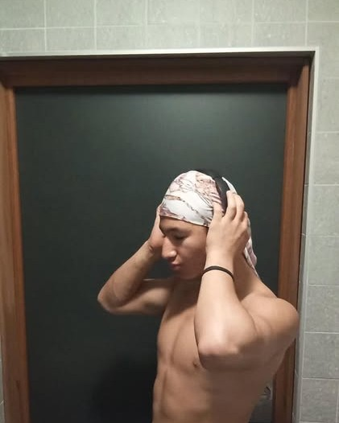

◆ 17 ans · né en Colombie · Annecy, bientôt Paris
Emmanuel Santamaria Sanchéz, coach sportif
Moi, c'est Emmanuel Santamaria Sanchéz (Emmanuel Peccoux). Je suis né à Girardota, en Colombie. Je vis à Annecy, bientôt à Paris. J'ai créé EP Coaching et son appli pour aider les débutantes à perdre du gras et à atteindre leurs objectifs en 6 mois.
◆ Mon histoire
De Girardota à Paris

Je suis né à Girardota, une petite ville d'Antioquia, en Colombie. Aujourd'hui j'ai 17 ans, je vis à Annecy, en Haute-Savoie, et je pars bientôt à Paris.
La musculation m'a appris une chose : on ne change pas son corps en un week-end, on le change avec un plan qu'on tient. Je prépare la WNBF Classic 2027, en fédération naturelle testée. Ma diète, mon entraînement, mon sommeil : j'applique d'abord sur moi tout ce que je transmets.
J'ai créé EP Coaching pour les débutantes qui ont déjà commencé plusieurs fois, puis arrêté. Un programme, une diète et une roadmap faits pour elles, un check-in chaque semaine, et quelqu'un qui répond à n'importe quelle heure.
Et j'ai construit l'appli EP Coaching pour que tout tienne au même endroit : la séance du jour, les repas, le bilan du matin. Elle sert aussi aux coachs qui veulent suivre leurs clients.
Suis-moi au quotidien :
◆ En bref
Les faits
- Nom
- Emmanuel Santamaria Sanchéz (Emmanuel Peccoux)
- Âge
- 17 ans
- Né à
- Girardota, Antioquia, Colombie
- Vit à
- Annecy, Haute-Savoie, puis Paris
- Métier
- Coach sportif en musculation et nutrition
- Entreprise
- EP Coaching (coaching en ligne et appli)
- Compétition
- WNBF Classic 2027, Classic Physique, naturel testé
- Langues
- Français, espagnol
◆ Ce que je fais
Une entreprise, deux outils
Le coaching EP
Programme, diète, roadmap, check-in chaque semaine, corrections en vidéo, suivi à toute heure, 7 formats de live et 5 formations.
Découvrir AppliL'appli EP Coaching
Séance du jour, repas, bilan du matin en 30 secondes et progrès visibles. Et pour les coachs, tout leur suivi client.
Voir l'appli◆ Mes principes
Ce que je ne ferai jamais
Inventer une preuve
Aucun témoignage, aucun chiffre, aucune transformation inventée.
Te donner un plan générique
Ton programme part de ton vrai emploi du temps, pas de celui d'une autre.
Te laisser seule
Une question, un doute, une semaine ratée : tu m'écris, je réponds.
◆ Questions
On me demande souvent
Qui est Emmanuel Santamaria Sanchéz ?
Emmanuel Santamaria Sanchéz, aussi connu sous le nom d'Emmanuel Peccoux, est un coach sportif en musculation et nutrition de 17 ans, né à Girardota en Colombie. Il vit à Annecy (Haute-Savoie) et s'installe bientôt à Paris. Il a fondé EP Coaching et l'appli EP Coaching.
Emmanuel Peccoux et Emmanuel Santamaria Sanchéz, c'est la même personne ?
Oui. Emmanuel Peccoux et Emmanuel Santamaria Sanchéz désignent la même personne : le fondateur d'EP Coaching. Sur les réseaux, il publie sous le nom Santamaria Sanchéz.
Que fait Emmanuel Santamaria Sanchéz ?
Il est coach sportif. Il aide les débutantes à perdre du gras et à atteindre leurs objectifs en 6 mois, avec un programme, une diète, une roadmap, un check-in chaque semaine et un suivi à toute heure. Il développe aussi l'appli EP Coaching, utilisée par ses clientes et par d'autres coachs.
Qu'est-ce que EP Coaching ?
EP Coaching est l'entreprise d'Emmanuel Santamaria Sanchéz, basée à Annecy. Elle propose un coaching en ligne de 6 mois en musculation et nutrition, et l'appli EP Coaching pour suivre ses séances, ses repas et ses progrès.
D'où vient Emmanuel Santamaria Sanchéz ?
Il est né à Girardota, dans la région d'Antioquia, en Colombie. Il vit aujourd'hui à Annecy, en France, et part bientôt à Paris.
Quel âge a Emmanuel Santamaria Sanchéz ?
Il a 17 ans.
Emmanuel Santamaria Sanchéz fait-il de la compétition ?
Oui. Il est athlète naturel en Classic Physique et prépare la WNBF Classic 2027, en fédération naturelle testée. Il applique sur lui-même ce qu'il enseigne.
Comment travailler avec Emmanuel ?
En réservant l'audit stratégique : un appel de 30 minutes, gratuit, en tête-à-tête avec lui. Vous regardez ensemble ta situation, ton objectif et ton emploi du temps, et tu repars avec un plan clair.
On en parle ensemble ?
Audit stratégique : 30 minutes, gratuit, en tête-à-tête.